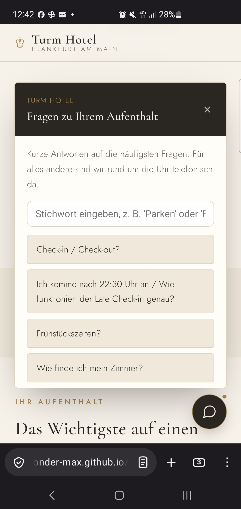
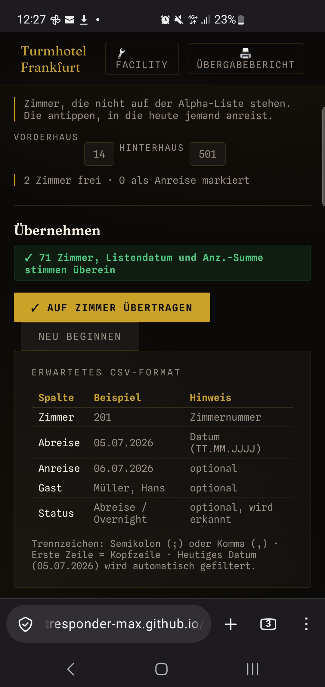
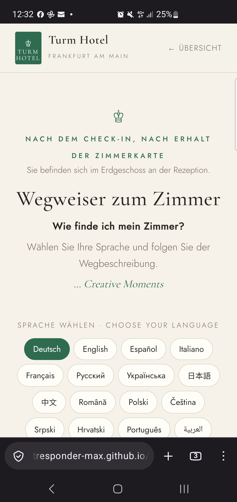

Turmhotel Frankfurt · Housekeeping · Stand 25.09.2026
Vorführung heute
Nicole, Tanja, Dario, Ralf — diese Seite ist die Grundlage für unsere heutige
Vorführung: was seit der letzten Runde neu ist, wie der Ablauf mit der echten
Alpha-Liste heute Schritt für Schritt aussieht, was insgesamt schon erledigt ist,
wohin es als Nächstes gehen kann — und wo die passenden Unterlagen für euch liegen.
An euch alle vier
Nicole · Direktorin, Tanja · Inhaberin, Dario · Front Office Manager und Ralf · Technischer Geschäftsführer
Nicole, Tanja, Dario, Ralf — diese Seiten sind nicht von oben in Auftrag gegeben worden.
Sie sind ausdrücklich aus eigener Initiative entstanden, aus der täglichen Praxis an der
Rezeption heraus: doppelte Zettelwirtschaft beim Housekeeping, kein Abgleich zwischen den
Handys im Team, immer wieder dieselben Fragen am Tresen. Daraus wurde zuerst der
Housekeeping Manager, dann der mehrsprachige Wegweiser, dann das Gästeportal mit
FAQ-Widget.
Dabei ging es mir nicht nur um die einzelne Funktion, sondern bewusst um das große
Ganze, das ich euch heute zeigen möchte:
Housekeeping ManagerFoto-Scan der Alpha-Liste, automatische Verteilung, Cloud-Sync zwischen den Handys, tägliches Archiv statt Zettel.
Wegweiser zum Zimmer15 Sprachen, direkt per QR-Code am Empfang oder auf der Zimmerkarte erreichbar.
Gästeportal-FAQEchte, vorab geprüfte Antworten auf die häufigsten Gästefragen — bewusst kein KI-Chatbot mit Halluzinationsrisiko, sondern geprüfte Fakten zum Haus.
Datenschutz von Anfang anKeine Zugangsdaten offen im Code, keine externen Tracker, jeder gefundene Fehler wird dokumentiert und behoben, nicht verschwiegen.

Screenshot vom Gerät, heute — Gästeportal-FAQ-Widget, direkt auf der Startseite erreichbar.
Vier Perspektiven, eine Lösung
Jede und jeder von euch schaut sich das gleich aus einem anderen Winkel an — hier
direkt für jeden von euch übersetzt:
Nicole — der Überblick
Dir als Direktorin geht es ums große Bild: ein System statt drei Baustellen,
saubere Kennzahlen bei jeder Übergabe, kein Flickenteppich zwischen Rezeption und
Housekeeping.
Was am Ende zählt, entscheidet sich ohnehin daran, was bei Tanja im Alltag ankommt
— deshalb gleich im nächsten Feld in ihre Sprache übersetzt.
Tanja — was es fürs Team bedeutet
Weniger Wartezeit für die Housekeeping-Kräfte, weil die Zimmerliste nicht mehr
abends nachgereicht werden muss. Weniger Frust, weil niemand mehr auf einen Rückruf
wartet, der nicht kommt. Mehr Kapazität für die kleineren Zusatzaufgaben, die sonst
als Erstes hinten runterfallen.
Und falls dir oder Nicole beim Zusehen noch etwas fehlt: Das Tool ist erweiterbar —
jede zusätzliche Idee kann noch eingebaut werden.
Dario — die Praxis
Du kennst das HSK-Tool schon aus dem Alltag an der Rezeption. Genau die Version,
die heute läuft, ist die Lösung, die du wolltest: Scan und Verteilung in einem
Schritt, ohne Umweg über eine zweite Seite oder einen CSV-Export.
Ralf — die Technik
Kurz in deiner Sprache: Alle Werkzeuge laufen als statische Seiten über GitHub
Pages, ohne eigenen Server, den wir pflegen müssten. Die Synchronisation zwischen
den Handys übernimmt eine Firebase Realtime Database. Der Foto-Scan liest die
Alpha-Liste per Texterkennung direkt im Browser — es geht nichts an einen fremden
Server.
Jede Änderung läuft über einen dokumentierten Pull Request im GitHub-Repo (aktuell
PR #3), nicht über einen stillen Patch.
Der Nutzen im Alltag — vor allem Zeitersparnis
Housekeeping: Die Verteilung der Zimmer läuft in Sekunden statt über Zuruf und
Papierliste, der Übergabebericht entsteht automatisch statt von Hand. Rezeption: Fragen,
die täglich mehrfach am Telefon oder am Tresen beantwortet werden — Late-Check-in,
Frühstückszeiten, Parken, Zimmerfindung — sind jetzt jederzeit selbst abrufbar, ohne dass
die Rezeption jedes Mal unterbrochen wird. In Summe: weniger Rückfragen, weniger
Doppelarbeit, mehr Zeit für den Gast direkt vor Ort.
Aktueller Stand: Alle hier gezeigten Seiten laufen aktuell
auf einer Entwicklungsseite zum Testen und Abstimmen, noch nicht auf der offiziellen
Hotel-Domain — und erfüllen bereits jetzt alle Datenschutz-Richtlinien.
01
Was seit der letzten Vorführung neu ist
Fünf Punkte aus der letzten Übergabe sind umgesetzt und live im Tool (github.com/intelligentresponder-max/turmhotel, PR #3):
Bettenzahl (Erw.)Der Foto-Scan liest jetzt mit, wie viele Betten pro Zimmer zu beziehen sind — als Badge E/D/T am Zimmer.
Kinder (Kin.)Zusatz-/Kinderbett wird erkannt und als „+Kind"-Badge am Zimmer angezeigt.
OOO-RückläuferZimmer, die aus „Außer Betrieb" zurückkommen, stehen im Foto-Scan separat und rot markiert — sie gelten nicht automatisch als sauber.
Sharing-DoppelcheckEin von zwei Gästen geteiltes Zimmer (Messe/Business) löst im Doppelcheck keinen Fehlalarm mehr aus.
ÜbergabeberichtZeigt jetzt zusätzlich Anreisezahlen sowie Betten-/Kinderbelegung.
Leerstand nach Haus sortiertDie Leerstand-Chips im Foto-Scan sind jetzt nach Vorderhaus/Hinterhaus gruppiert.
Für euch als Führungsrunde: Ein Werkzeug für Scan und Verteilung statt zwei getrennte Schritte — weniger Fehlerquellen, mehr Kennzahlen im Übergabebericht, jeder Tag automatisch archiviert.
02
Klick-Anleitung für heute
Genau dieser Ablauf lässt sich live mit der heutigen, gedruckten Alpha-Liste vorführen:
1
Zimmerstatus zurücksetzen
Unten im Tab „Gästeliste" → „Zimmerstatus zurücksetzen". Archiviert den Vortag automatisch im Verlauf-Tab.
2
Foto-Scan öffnen
Tab „Gästeliste" → „📷 Foto-Scan" antippen.
3
Alpha-Liste fotografieren
Bis zu 3 Seiten aufnehmen (Kamera oder Datei) → „Seiten auswerten". Läuft lokal im Browser, es geht nichts an einen Server.
4
Zeilen prüfen — jetzt mit Betten & Kindern
Zimmer und Abreisedatum durchgehen. Neu: die Spalten Erw. und Kin. stehen mit in der Tabelle und sind bei Bedarf editierbar.
5
Doppelcheck ausfüllen
Anz.-Summe von der Alpha-Liste (heute: 71) und Anreisen Zimmer laut Suite8-Verfügbarkeit eintragen. Beide Ampeln müssen grün werden.
6
Leerstehende Anreisezimmer ergänzen
Zimmer ohne Alpha-Liste-Eintrag antippen — jetzt nach Vorderhaus/Hinterhaus gruppiert. Zimmer, die aus Außer Betrieb (OOO) zurückkommen, extra darunter, rot markiert.
7
Übertragen
„✓ Auf Zimmer übertragen" → Vorschau prüfen → übertragen. Abreise-Zimmer leuchten orange.
8
Personal prüfen und verteilen
Tab „Personal": wer heute nicht da ist markieren, dann automatisch verteilen lassen.
9
Übergabebericht zeigen
Oben rechts „🖨️ Übergabebericht" — zeigt jetzt zusätzlich die Verfügbarkeitszahlen (Anreisen, Betten, Kinder) für den Tag.
⛔ Für die Vorführung besonders zeigenswert: ein Zimmer im Modal auf „Außer Betrieb" setzen, dann im Foto-Scan zeigen, wie es als eigene rote „Ex-OOO"-Kachel wieder auftaucht und beim Übertragen automatisch eine Reinigung erzwingt statt als „schon sauber" zu gelten.
03
Mit der echten Liste von heute getestet
Die beiden Fotos der heutigen Alpha-Liste (24.09., HK-Tag 25.09.) wurden vorab gegen die neue Logik geprüft:
✓ Ergebnis: Volltreffer
- 71 von 71 Zimmern korrekt erkannt, keins fehlt oder ist doppelt
- Erwachsene-Summe 80 und Kinder-Summe 0 — exakt wie auf der gedruckten Liste
- Housekeeping-Tag automatisch richtig gesetzt: 25.09.2026
- Anz.-Summen-Ampel grün: „71 Zimmer, Listendatum und Anz.-Summe stimmen überein"
Ehrlich dazugesagt: Getestet wurde die Auswerte-Logik mit dem Text der beiden Fotos — nicht die Kamera-Texterkennung selbst, die aus der Testumgebung heraus nicht erreichbar war. Die Texterkennung (Tesseract) läuft unverändert und bewährt; sollte eine einzelne Zeile bei der Aufnahme unscharf gelesen werden, ist die Tabelle in Schritt 4 direkt editierbar.

Screenshot vom Gerät, heute (25.09.) — genau der Stand, der oben beschrieben ist.
04
Verfügbarkeit diese Woche (Suite8)
Gegenprobe mit dem echten PMS-Export bestätigt die Zahlen von oben unabhängig:
Reservierungen 71, Erwachsene im Haus 80,
Kinder im Haus 0 und Abreisen Zimmer 38 zum
HK-Tag stimmen exakt mit der Alpha-Liste überein. Zusätzlich die ganze Woche
zum Vorausplanen:
| Tag | Verfügbarkeit | Abreisen Zi. | Anreisen Zi. | Belegung | Kinder im Haus |
|---|
| Do 24.09. | 2 | 23 | 26 | 97,26 % | 0 |
| Fr 25.09. (HK-Tag) | 5 | 38 | 35 | 93,15 % | 0 |
| Sa 26.09. | 8 | 45 | 42 | 89,04 % | 0 |
| So 27.09. | 25 | 56 | 39 | 65,75 % | 1 |
| Mo 28.09. | 18 | 29 | 36 | 75,34 % | 2 |
| Di 29.09. | 8 | 28 | 38 | 89,04 % | 1 |
| Mi 30.09. | 6 | 20 | 22 | 91,78 % | 1 |
Quelle: Suite8-Verfügbarkeitsexport (Screenshot von Amir, 24.09. abends). OOO/OOS laut PMS aktuell durchgehend 0.
Ruhigster Tag der Woche: So 27.09. mit 65,75 % Belegung (25 freie Zimmer) — relevant für die Personalplanung.
05
Wegweiser zum Zimmer
Direkt an Dario, Tanja und Nicole: Das hier ist kein Housekeeping-Thema, aber da ihr heute alle im Raum seid, kurz mitgezeigt — Rückmeldung dazu ist ausdrücklich erwünscht, gerade von der Rezeption. Ralf: für dich eher zum Kenntnisnehmen als zum Mitentscheiden — technisch hängt der Wegweiser am selben Baukasten wie der Rest.
wegweiser.html führt Gäste nach dem Check-in in 15 Sprachen vom Empfang zum Zimmer — gedacht zum Öffnen per QR-Code (z. B. auf der Zimmerkarte oder an der Rezeption), bereits verlinkt in manager.html und im Gästeportal (index.html).

Screenshot vom Gerät, heute — Sprachauswahl nach dem Öffnen per QR-Code.
Entwurf — muss noch überarbeitet werden. Die Seite ist live und per QR-Code erreichbar, aber inhaltlich noch nicht final. Feedback von Dario, Tanja und Nicole (Rezeption) fließt in die Überarbeitung ein, bevor sie fest ausgerollt wird.
06
Was schon erledigt ist — Gesamtüberblick
Alles, was bis heute gebaut, getestet und live ist — dieselbe Liste wie auf der
Linkübersicht, hier zum Durchklicken.
Jeder Punkt öffnet die jeweilige Seite.
Housekeeping
Verwaltung & Handbuch
Gäste
Betriebssicherheit & Datenschutz
✓
Nicht öffentlich gelistetAlle internen Seiten sind noindex, keine Tracker, keine Zugangsdaten im Code.
✓
Hängt nicht an einer PersonAnleitung für kleine Änderungen ohne Entwickler, Plan für den Umzug auf hoteleigene Konten, vollständige Übergabe-Doku.
✓
FehlerprotokollJeder gefundene Fehler ist mit Ursache und Gegenmaßnahme dokumentiert — damit er nicht zweimal passiert.
✓
LinkübersichtAlle Seiten auf einen Blick, inklusive abgeschalteter Altseiten.
Ehrlich: noch offen
○
Sync zwischen den HandysDie Firebase-Testregeln sind abgelaufen. Die App zeigt das jetzt mit einem roten Banner an, statt still Daten zu verlieren. Die neuen Regeln kommen mit dem Umzug auf hoteleigene Konten.
○
Wegweiser finalWartet auf euer Feedback von der Rezeption.
○
Offizielle Hotel-DomainAktuell läuft alles auf der Entwicklungsseite. Der Umzug ist vorbereitet, braucht aber eure Freigabe.
07
Blick nach vorn
Das Fundament steht: ein Baukasten aus schlanken Seiten, der ohne eigenen Server
auskommt und sich Stück für Stück erweitern lässt. Zwei Richtungen liegen auf der Hand.
1 · Mehrsprachiger Ausbau
Zeitnah möglich
Das ist kein Neuland. Der Wegweiser läuft schon in 15 Sprachen, die Gebrauchsanweisung
in fünf und das Handbuch in drei. Die Sprachumschaltung ist also schon gebaut und
erprobt. Wir müssen sie nur auf die übrigen Seiten übertragen.
- Gästeportal & FAQ in den Sprachen des Wegweisers — damit Gäste aus
aller Welt Late-Check-in, Frühstück oder Parken selbst nachlesen können, ohne an der Rezeption
zu fragen.
- Housekeeping-App in den Teamsprachen (Kroatisch, Ungarisch, Afrikaans —
wie schon im PDF), damit jede Kraft die Oberfläche in ihrer Sprache bedienen kann.
- Qualität vor Tempo: Jede Übersetzung wird von Muttersprachler:innen aus dem
Team oder von der Rezeption gegengelesen. Ungeprüfte Maschinenübersetzungen gehen nicht live.
Aufwand: Tage, nicht Monate. Wir fangen mit Englisch fürs Gästeportal an, dann folgen die
Sprachen, die bei uns am häufigsten gebraucht werden.
2 · Zusammenspiel mit Buchungsplattformen
Nächster Ausbauschritt — nach Abstimmung
Die Verfügbarkeitstabelle oben zeigt es: Ruhige Tage wie So 27.09. mit 65,75 %
Belegung sind schon Tage vorher erkennbar. Die Idee dahinter: freie Zimmer gerade
zu diesen Randzeiten gezielt und preiswert anbieten, aber nur über seriöse, etablierte
Plattformen und nie am Haus vorbei.
1
Erkennen
Das Tool erkennt aus der Suite8-Verfügbarkeit Tage mit niedriger Auslastung. Die Daten dafür nutzen wir heute schon.
2
Vorschlagen — Mensch entscheidet
Das Tool schlägt nur vor, z. B. „Sonntag: 25 freie Zimmer, Randzeiten-Rate prüfen". Jeden Preis gebt ihr frei. Das Tool ändert nie selbst einen Preis.
3
Veröffentlichen
Nach der Freigabe geht die Rate über den Channel Manager bzw. die Plattformen, mit denen das Haus bereits Verträge hat, hinaus. Es kommen keine neuen, unbekannten Portale dazu.
Die Alternativen haben wir doppelt geprüft, jeweils auf Nutzen, Sicherheit und Aufwand:
| Weg | Nutzen | Sicherheit / Seriosität | Einschätzung |
|---|
| Direktbuchung über die eigene Hotel-Website | Keine Provision, Gast bleibt direkt beim Haus | Volle Kontrolle | Erste Wahl |
| Etablierte Buchungsportale über den bestehenden Channel Manager | Große Reichweite, gerade für kurzfristige Buchungen | Vertraglich geregelt, bekannte Partner | Empfohlen |
| Last-Minute-Angebote bei großen, bekannten Anbietern | Genau für Randzeiten gedacht | Nur mit Vertrag; Provision und Markenwirkung vorher prüfen | Prüfen |
| Unbekannte Rabatt- oder Weiterverkaufs-Portale | Kurzfristig Umsatz | Preisverfall, Imageschaden, unklare Zahlungswege | Nicht empfohlen |
Ralf — der technische Knackpunkt: Die Zugangsdaten zu den
Buchungsplattformen dürfen niemals in einer öffentlichen Webseite stehen. Solange
alles als statische Seite läuft, bleibt es deshalb bei Stufe 1 und 2 (Erkennen und
Vorschlagen). Für Stufe 3 braucht es entweder die offizielle Schnittstelle des
Channel Managers oder einen kleinen, abgesicherten Server-Baustein. Das entscheiden wir
gemeinsam, nicht im Alleingang.
Rechtlich im Rücken: Preisparitätsklauseln der Buchungsportale
sind in Deutschland seit dem BGH-Beschluss von 2021 nicht mehr durchsetzbar. Das Haus
darf direkt also günstigere Preise anbieten als auf den Portalen. Deshalb steht die
Direktbuchung in der Tabelle ganz oben.
Beides passt zur bisherigen Linie: Das Tool schlägt vor, der Mensch entscheidet. Jeder
Schritt wird dokumentiert, und neue Bausteine kommen erst live, wenn sie mit echten Daten
getestet sind.
08
Unterlagen
Zum Nachlesen und Weitergeben:
Alles hier liegt bereit, falls einer von euch nach dem Termin noch einmal nachlesen will — Nicole, Tanja, Dario, Ralf.